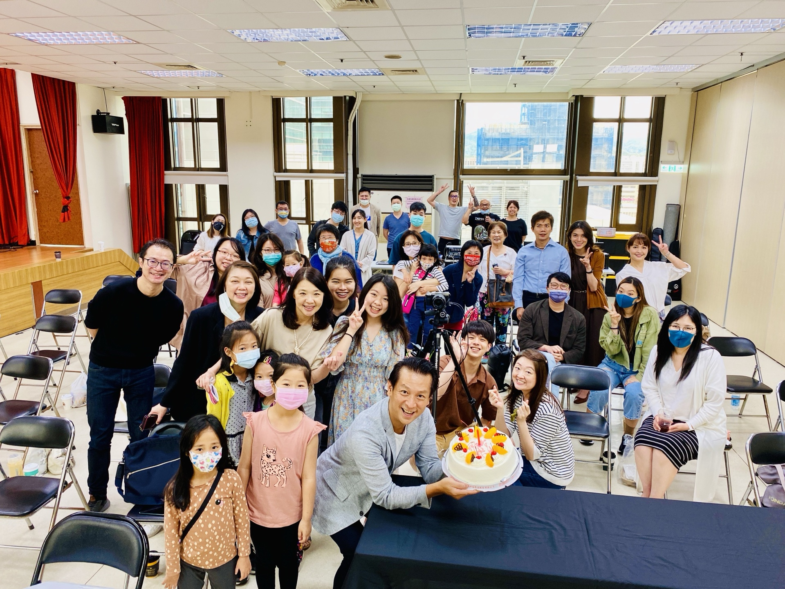
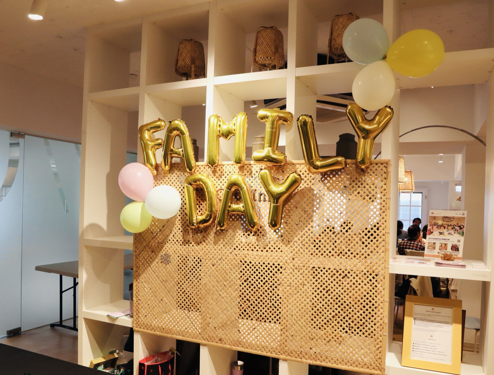
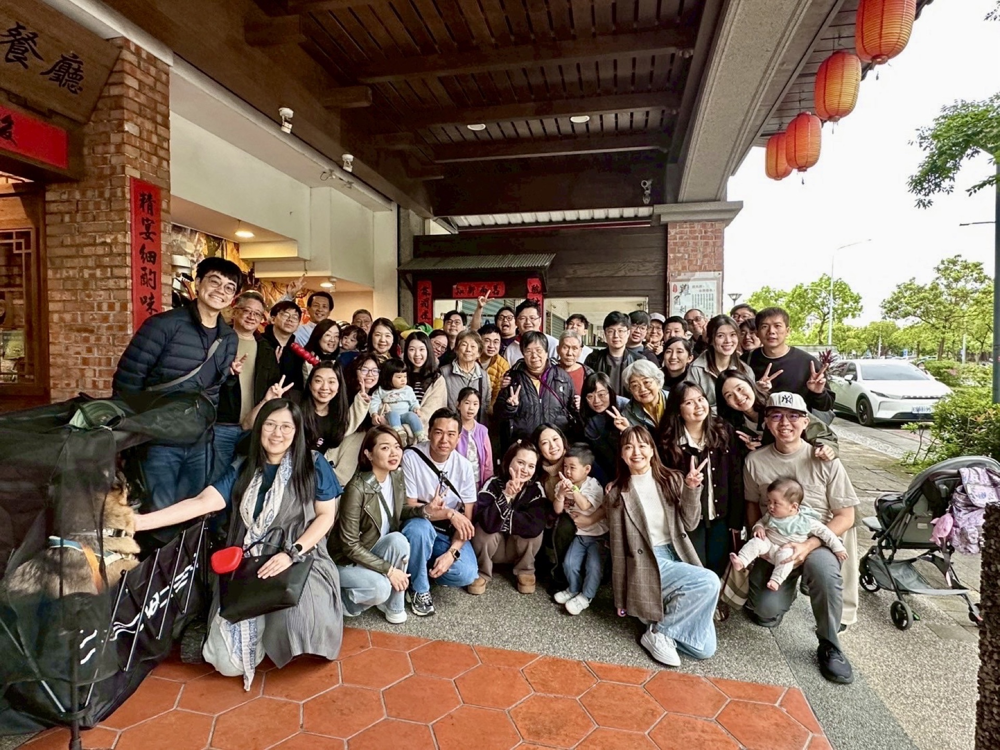
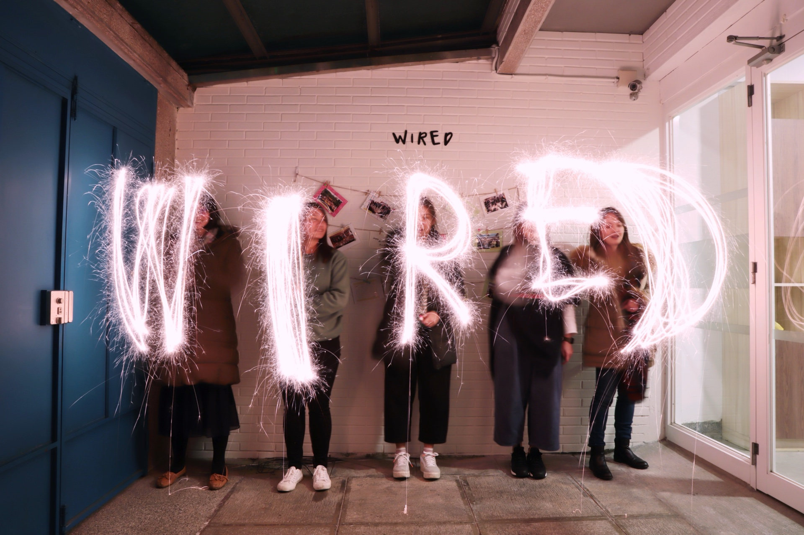

JesuswayTaipei was founded in April 2015 as a church centered on Taipei's young working generation. In a rapidly changing world shaped by AI and constant disruption, we help people build a relationship with God and pursue whole-person health — in body, mind, and spirit — while also caring about the individual struggles, choices, and growth that people face every day.
Especially when it comes to career, relationships, and life direction, we want to help young people discover their gifts and understand their role in God's kingdom.
We believe faith shouldn't stay locked inside Sunday mornings — it should walk into every day of life.
So here, you'll gradually discover:
A new understanding of the connection between faith and everyday life
God's word and presence become not just doctrine, but a living strength that accompanies every decision you make.
Wisdom and skills you can actually apply in the workplace
Find direction and purpose amid the challenges and pressures of work.
Relationships where you feel truly understood and accompanied
Even in imperfection, you are accepted and can grow together with others.
A way to share joy with those around you
Pass on to others the good things you have learned and experienced through your own life transformation.
We are a community of people still learning — regardless of background or stage of life — connecting with and supporting one another as we live more authentically and freely together.
May everyone who walks into JesuswayTaipei slowly find their place here, experience abundance and renewal, and boldly live as the most beautiful version of themselves that God created.